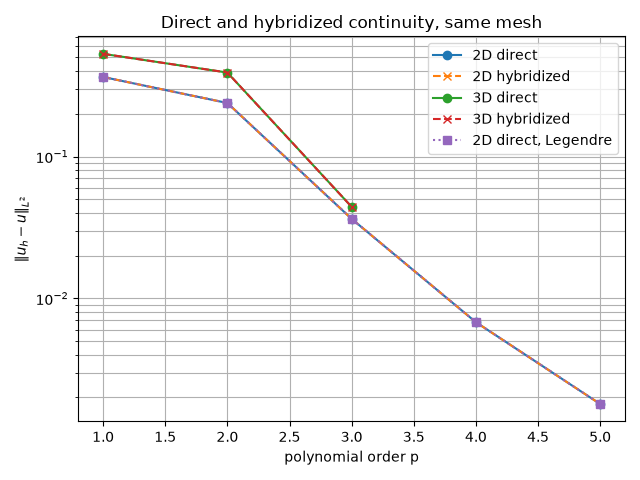

Note
Go to the end to download the full example code.
Direct continuity for a multi-element Laplace solve.#
Where solve_hybridized() enforces continuity with one multiplier per
constraint row, Mesh.compute_kform_direct_dof_map() numbers one global
field directly: every shared object carries the coefficients of its common
Legendre test window, every element transfer combines them with its private
free modes, and no continuity rows are needed. The map is purely topological,
so curved elements enter only through the element operators scattered through
the transfer, and every basis family pairs against the same windows.
Both formulations run below on the same mesh, maps, and polynomial order; the printed tables compare unknown counts and physical \(L^2\) errors under p- and h-refinement, and the closing plot shows the p-refinement rates. Dirichlet data enter the direct path as the \(L^2\) projection onto each outer-boundary object’s window – the same dual moments the hybridized path prescribes – so the two solves reproduce one another to solver tolerance.
from __future__ import annotations
from itertools import product
from time import perf_counter
from typing import Any
import numpy as np
import numpy.typing as npt
import scipy.sparse.linalg as sparse_la
from fdg import (
BasisSpecs,
BasisType,
CoordinateMap,
DegreesOfFreedom,
DirectDofMap,
FunctionSpace,
IntegrationMethod,
IntegrationRegistry,
IntegrationSpace,
IntegrationSpecs,
KFormSpecs,
Mesh,
MeshGeometry,
MeshKFormSpecs,
SpaceMap,
laplace_stiffness,
scatter_csc,
solve_hybridized,
)
# The projection reuses the exact window moments the hybridized path prescribes.
from fdg.boundary_conditions import (
_restrict_map,
_windowed_component_basis,
_windowed_dual_values,
_windowed_row_counts,
)
from fdg.integration import projection_l2_dual
from matplotlib import pyplot as plt
# scipy sparse containers: coo/csc matrix vs array is unresolved upstream.
SparseMatrix = Any
PackedRows = tuple[
npt.NDArray[np.uintp],
npt.NDArray[np.uint64],
npt.NDArray[np.uint32],
npt.NDArray[np.uintp],
npt.NDArray[np.double],
]
DEFORMATION = 0.2
GEO_ORDER = 2
Hybridized solve#
The constraint-row path, kept so both formulations run on the same mesh.
def build_continuity_rows(
mesh: Mesh,
maps: list[SpaceMap],
element_specs: list[KFormSpecs],
) -> PackedRows:
"""Assemble hierarchical continuity rows through the public mesh method."""
return mesh.compute_kform_continuity_constraints(element_specs, maps)
def solve_hybridized_continuity(
ndim: int,
order: int,
cells: int,
*,
basis_type: BasisType = BasisType.LAGRANGE_GAUSS_LOBATTO,
) -> tuple[float, int, int, int]:
"""Solve the problem with continuity and Dirichlet rows.
Returns the physical :math:`L^2` error, the unknowns of the augmented
system, the continuity rows, and the constraint rows.
"""
mesh = make_mesh(ndim, cells)
maps = make_element_maps(ndim, order + 4, cells)
base_space = FunctionSpace(*(BasisSpecs(basis_type, order) for _ in range(ndim)))
element_specs = [KFormSpecs(0, base_space) for _ in maps]
continuity = build_continuity_rows(mesh, maps, element_specs)
dofs_per_element = int(np.sum(element_specs[0].component_dof_counts))
total_dofs = len(maps) * dofs_per_element
rhs = np.zeros(total_dofs)
for element_id, element_map in enumerate(maps):
offset = element_id * dofs_per_element
rhs[offset : offset + dofs_per_element] = projection_l2_dual(
manufactured_source, base_space, element_map
).values.flatten()
boundary_conditions = {
int(object_id): manufactured_solution
for _, object_id, _, _ in mesh.iterate_boundary(ndim - 1)
}
constraints, constraint_rhs = mesh.compute_kform_global_constraints(
element_specs, maps, boundary_conditions
)
geometry = MeshGeometry.from_elements(*maps)
structure = MeshKFormSpecs.from_space(ndim, [("u", 0)], base_space, len(maps))
result = solve_hybridized(
geometry, structure, rhs, constraints, constraint_rhs, laplace_stiffness
)
if result.constraint_residual > 1.0e-10:
raise RuntimeError(
f"hybridized trace residual is too large: {result.constraint_residual:.3e}"
)
error = physical_error(np.concatenate(result.element_dofs), maps, element_specs)
return (
error,
total_dofs + constraints[0].size - 1,
continuity[0].size - 1,
constraints[0].size - 1,
)
Direct transfer#
Mesh.compute_kform_direct_dof_map returns a sparse element-to-global
transfer: entry_offsets slices it into one block per element-local degree
of freedom, entry_index names the global unknown of every entry, and
element_interior_offsets counts the element-private free modes that follow
the shared objects’ unknowns.
def element_entries(
transfer: DirectDofMap,
element_id: int,
) -> tuple[npt.NDArray[np.intp], npt.NDArray[np.intp], npt.NDArray[np.double]]:
"""Return the local DoF, global DoF, and coefficient of one element."""
first = int(transfer.element_offsets[element_id])
last = int(transfer.element_offsets[element_id + 1])
counts = np.diff(transfer.entry_offsets[first : last + 1])
local_dofs = np.repeat(np.arange(last - first, dtype=np.intp), counts)
start = int(transfer.entry_offsets[first])
stop = int(transfer.entry_offsets[last])
return (
local_dofs,
np.asarray(transfer.entry_index[start:stop], dtype=np.intp),
np.asarray(transfer.entry_value[start:stop], dtype=np.double),
)
def object_row_count(order: int, mdim: int) -> int:
"""Return the window size of one shared object for a scalar field.
A scalar trace has no covector axis, so every object axis drops its two
highest Legendre functions, mirroring the C boundary mass assembly.
"""
common = KFormSpecs(
0, FunctionSpace(*(BasisSpecs(BasisType.LEGENDRE, order) for _ in range(mdim)))
)
return int(_windowed_row_counts(common)[0])
def boundary_object_globals(
transfer: DirectDofMap,
mesh: Mesh,
maps: list[SpaceMap],
order: int,
cells: int,
) -> tuple[npt.NDArray[np.intp], npt.NDArray[np.double]]:
"""Project the boundary datum onto every outer-boundary object window.
A boundary unknown is the coefficient of one function of the object's
common Legendre window, so the datum enters as its :math:`L^2` projection;
a point object takes the traced value itself, its window being the constant
one. Returns the global DoFs and their prescribed coefficients.
"""
ndim = mesh.ndim
rows = [object_row_count(order, mdim) for mdim in range(ndim)]
counts = [(cells + 1) ** ndim] + [
len(mesh.collections[mdim - 1]) for mdim in range(1, ndim)
]
offsets = {}
base = 0
for mdim in range(ndim):
offsets[mdim] = base
base += counts[mdim] * rows[mdim]
registry = IntegrationRegistry()
globals_: list[int] = []
values: list[float] = []
for mdim, object_id, element_ids, orientations in mesh.iterate_boundary_all():
count = rows[mdim]
if count == 0:
# An empty window carries no unknown and prescribes nothing.
continue
boundary_map = _restrict_map(
maps[int(element_ids[0])],
orientations[0],
ndim,
mdim,
integration_registry=registry,
)
common = KFormSpecs(
0,
FunctionSpace(*(BasisSpecs(BasisType.LEGENDRE, order) for _ in range(mdim))),
)
integration = boundary_map.integration_space
moments = _windowed_dual_values(
manufactured_solution,
common,
boundary_map,
integration,
ndim,
mdim,
integration_registry=registry,
)[0]
if mdim == 0:
data = moments
else:
basis = np.asarray(
_windowed_component_basis(
common, integration, (), integration_registry=registry
)
)
weights = np.asarray(integration.weights(registry)) * np.abs(
np.asarray(boundary_map.determinant)
)
table = basis.reshape((count, *weights.shape)) * weights
gram = table.reshape(count, -1) @ basis.reshape(count, -1).T
data = np.linalg.solve(gram, moments)
first = offsets[mdim] + int(object_id) * count
globals_.extend(range(first, first + count))
values.extend(np.asarray(data).reshape(-1))
private = int(np.sum(np.diff(transfer.element_interior_offsets)))
if base + private != transfer.global_dof_count:
raise RuntimeError(
f"object layout covers {base} of {transfer.global_dof_count - private} "
"shared unknowns"
)
return np.asarray(globals_, dtype=np.intp), np.asarray(values, dtype=np.double)
def assemble_global_laplace(
transfer: DirectDofMap,
maps: list[SpaceMap],
element_specs: list[KFormSpecs],
base_space: FunctionSpace,
) -> tuple[np.ndarray, npt.NDArray[np.double]]:
"""Scatter every element operator and load vector onto the global unknowns."""
size = transfer.global_dof_count
matrix = np.zeros((size, size))
rhs = np.zeros(size)
for element_id, element_map in enumerate(maps):
local_dofs, global_dofs, values = element_entries(transfer, element_id)
stiffness = laplace_stiffness(
element_id, [element_specs[element_id]], element_map
)
load = projection_l2_dual(
manufactured_source, base_space, element_map
).values.flatten()
# One entry of the scatter is ``T_i * M[i, j] * T_j``.
np.add.at(
matrix,
(global_dofs[:, None], global_dofs[None, :]),
values[:, None]
* stiffness[local_dofs[:, None], local_dofs[None, :]]
* values[None, :],
)
np.add.at(rhs, global_dofs, values * load[local_dofs])
return matrix, rhs
def assemble_sparse_global_laplace(
transfer: DirectDofMap,
maps: list[SpaceMap],
element_specs: list[KFormSpecs],
base_space: FunctionSpace,
) -> tuple[SparseMatrix, npt.NDArray[np.double]]:
r"""Scatter every element operator into a sparse global system through one C call.
The flat block array holds one row-major :math:`n_e \times n_e` raw stiffness per
element; :func:`fdg.scatter_csc` applies the transfer weighting per entry pair.
"""
sizes = np.diff(transfer.element_offsets)
squares = np.concatenate(([0], np.cumsum(sizes * sizes)))
local = np.empty(int(squares[-1]))
for element_id, element_map in enumerate(maps):
stiffness = np.asarray(
laplace_stiffness(element_id, [element_specs[element_id]], element_map)
)
local[squares[element_id] : squares[element_id + 1]] = stiffness.reshape(-1)
matrix = scatter_csc(transfer, local)
rhs = np.zeros(transfer.global_dof_count)
for element_id, element_map in enumerate(maps):
local_dofs, global_dofs, values = element_entries(transfer, element_id)
load = projection_l2_dual(
manufactured_source, base_space, element_map
).values.flatten()
np.add.at(rhs, global_dofs, values * load[local_dofs])
return matrix, rhs
def element_solution(
transfer: DirectDofMap,
solution: npt.NDArray[np.double],
element_count: int,
) -> npt.NDArray[np.double]:
"""Pull one global solution back into the element-major layout.
The inverse transfer is the transpose of the forward one.
"""
local = np.zeros(transfer.element_dof_count)
for element_id in range(element_count):
local_dofs, global_dofs, coefficients = element_entries(transfer, element_id)
block = slice(
int(transfer.element_offsets[element_id]),
int(transfer.element_offsets[element_id + 1]),
)
np.add.at(local[block], local_dofs, coefficients * solution[global_dofs])
return local
def solve_direct_continuity(
ndim: int,
order: int,
cells: int,
*,
basis_type: BasisType = BasisType.LAGRANGE_GAUSS_LOBATTO,
) -> tuple[float, int, SparseMatrix]:
"""Assemble and solve the global system of the direct formulation.
Returns the physical :math:`L^2` error, the number of global unknowns, and
the assembled sparse system matrix.
"""
mesh = make_mesh(ndim, cells)
maps = make_element_maps(ndim, order + 4, cells)
base_space = FunctionSpace(*(BasisSpecs(basis_type, order) for _ in range(ndim)))
element_specs = [KFormSpecs(0, base_space) for _ in maps]
transfer = mesh.compute_kform_direct_dof_map(element_specs)
matrix, rhs = assemble_sparse_global_laplace(
transfer, maps, element_specs, base_space
)
boundary, data = boundary_object_globals(transfer, mesh, maps, order, cells)
solution = np.zeros(transfer.global_dof_count)
solution[boundary] = data
# Boundary unknowns carry the projection; free unknowns solve the reduced system.
free = np.setdiff1d(np.arange(transfer.global_dof_count), boundary)
reduced = matrix[free][:, free].tocsc()
reduced_rhs = rhs[free] - np.asarray(matrix[free][:, boundary] @ data).reshape(-1)
solution[free] = sparse_la.splu(reduced).solve(reduced_rhs)
local = element_solution(transfer, solution, len(maps))
return physical_error(local, maps, element_specs), transfer.global_dof_count, matrix
Comparison#
A symmetric element matrix stays symmetric under a transfer applied in both indices.
def compare(ndim: int, order: int, cells: int) -> tuple[float, float, int, int]:
"""Solve both formulations once, validate the direct system, and report.
Returns the direct and the hybridized :math:`L^2` error and the number of
unknowns of each system.
"""
started = perf_counter()
hybrid_error, hybrid_unknowns, continuity_rows, rows = solve_hybridized_continuity(
ndim, order, cells
)
hybrid_elapsed = perf_counter() - started
started = perf_counter()
direct_error, direct_unknowns, matrix = solve_direct_continuity(ndim, order, cells)
direct_elapsed = perf_counter() - started
asymmetry = abs(matrix - matrix.T).max()
if asymmetry > 1.0e-10 * abs(matrix).max():
raise RuntimeError(f"the direct system is not symmetric: {asymmetry:.3e}")
if not np.isfinite(direct_error):
raise RuntimeError("the direct error is not finite")
# Both formulations span the same constraint space with the same Dirichlet projection.
agreement = abs(direct_error - hybrid_error) / hybrid_error
if agreement > 1.0e-10:
raise RuntimeError(
f"direct and hybridized errors disagree: {agreement:.3e} relative"
)
print(
f"{ndim}D, {cells} cell{'s' if cells > 1 else ''} per axis, p={order}: "
f"direct unknowns={direct_unknowns}, hybridized unknowns={hybrid_unknowns} "
f"({hybrid_unknowns / direct_unknowns:.2f}x), rows={continuity_rows} continuity "
f"+ {rows - continuity_rows} boundary, "
f"direct L2={direct_error:.6e}, hybridized L2={hybrid_error:.6e}, "
f"agreement={agreement:.1e}, "
f"direct={direct_elapsed:.2f}s, hybridized={hybrid_elapsed:.2f}s",
flush=True,
)
return direct_error, hybrid_error, direct_unknowns, hybrid_unknowns
def _decreasing(errors: list[float]) -> bool:
"""Return whether every error is strictly smaller than the one before it."""
return all(later < earlier for earlier, later in zip(errors, errors[1:]))
def main() -> None:
"""Report p- and h-refinement of both continuity formulations."""
order_sweeps = {2: (1, 2, 3, 4, 5), 3: (1, 2, 3)}
convergence: dict[int, tuple[tuple[int, ...], list[float], list[float]]] = {}
for ndim, orders in order_sweeps.items():
print(f"p-refinement, {ndim}D curved mesh, {2**ndim} elements:", flush=True)
direct_errors: list[float] = []
hybrid_errors: list[float] = []
for order in orders:
direct_error, hybrid_error, _, _ = compare(ndim, order, 2)
direct_errors.append(direct_error)
hybrid_errors.append(hybrid_error)
if not _decreasing(direct_errors):
raise RuntimeError("the direct L2 error did not decrease under p-refinement")
print(
" direct L2 errors: " + ", ".join(f"{error:.6e}" for error in direct_errors),
flush=True,
)
convergence[ndim] = (orders, direct_errors, hybrid_errors)
print("h-refinement, 2D curved mesh, p=2:", flush=True)
refinement_errors: list[float] = []
for cells in (1, 2, 3, 4, 5):
direct_error, _, _, _ = compare(2, 2, cells)
refinement_errors.append(direct_error)
if not _decreasing(refinement_errors):
raise RuntimeError("the direct L2 error did not decrease under h-refinement")
# Pure Legendre is singular in the hybridized solver; equal-order GLL is valid there.
print("p-refinement, 2D curved mesh, Legendre elements (direct only):", flush=True)
legendre_errors: list[float] = []
orders_2d = order_sweeps[2]
for order, reference in zip(orders_2d, convergence[2][2]):
started = perf_counter()
direct_error, direct_unknowns, matrix = solve_direct_continuity(
2, order, 2, basis_type=BasisType.LEGENDRE
)
elapsed = perf_counter() - started
agreement = abs(direct_error - reference) / reference
if agreement > 1.0e-10:
raise RuntimeError(
f"Legendre direct error disagrees with hybridized: {agreement:.3e}"
)
asymmetry = np.max(np.abs(matrix - matrix.T))
if asymmetry > 1.0e-10 * np.max(np.abs(matrix)):
raise RuntimeError(f"the direct system is not symmetric: {asymmetry:.3e}")
legendre_errors.append(direct_error)
print(
f"2D, 2 cells per axis, p={order}: direct unknowns={direct_unknowns}, "
f"direct L2={direct_error:.6e}, hybridized L2={reference:.6e}, "
f"agreement={agreement:.1e}, direct={elapsed:.2f}s",
flush=True,
)
if not _decreasing(legendre_errors):
raise RuntimeError("the direct L2 error did not decrease under p-refinement")
fig, axis = plt.subplots()
for ndim, (orders, direct_errors, hybrid_errors) in convergence.items():
axis.semilogy(orders, direct_errors, marker="o", label=f"{ndim}D direct")
axis.semilogy(
orders, hybrid_errors, marker="x", linestyle="--", label=f"{ndim}D hybridized"
)
axis.semilogy(
orders_2d, legendre_errors, marker="s", linestyle=":", label="2D direct, Legendre"
)
axis.set(
xlabel="polynomial order p",
ylabel=r"$\|u_h - u\|_{L^2}$",
title="Direct and hybridized continuity, same mesh",
)
axis.grid(True, which="both")
axis.legend()
fig.tight_layout()
if "agg" not in plt.get_backend().lower():
plt.show()
if __name__ == "__main__":
main()

p-refinement, 2D curved mesh, 4 elements:
2D, 2 cells per axis, p=1: direct unknowns=9, hybridized unknowns=31 (3.44x), rows=7 continuity + 8 boundary, direct L2=3.636579e-01, hybridized L2=3.636579e-01, agreement=7.6e-16, direct=0.00s, hybridized=0.00s
2D, 2 cells per axis, p=2: direct unknowns=25, hybridized unknowns=63 (2.52x), rows=11 continuity + 16 boundary, direct L2=2.382914e-01, hybridized L2=2.382914e-01, agreement=2.7e-15, direct=0.00s, hybridized=0.00s
2D, 2 cells per axis, p=3: direct unknowns=49, hybridized unknowns=103 (2.10x), rows=15 continuity + 24 boundary, direct L2=3.634391e-02, hybridized L2=3.634391e-02, agreement=5.3e-15, direct=0.00s, hybridized=0.01s
2D, 2 cells per axis, p=4: direct unknowns=81, hybridized unknowns=151 (1.86x), rows=19 continuity + 32 boundary, direct L2=6.790316e-03, hybridized L2=6.790316e-03, agreement=1.0e-13, direct=0.00s, hybridized=0.01s
2D, 2 cells per axis, p=5: direct unknowns=121, hybridized unknowns=207 (1.71x), rows=23 continuity + 40 boundary, direct L2=1.799928e-03, hybridized L2=1.799928e-03, agreement=2.2e-13, direct=0.00s, hybridized=0.01s
direct L2 errors: 3.636579e-01, 2.382914e-01, 3.634391e-02, 6.790316e-03, 1.799928e-03
p-refinement, 3D curved mesh, 8 elements:
3D, 2 cells per axis, p=1: direct unknowns=27, hybridized unknowns=127 (4.70x), rows=37 continuity + 26 boundary, direct L2=5.294507e-01, hybridized L2=5.294507e-01, agreement=8.4e-16, direct=0.02s, hybridized=0.02s
3D, 2 cells per axis, p=2: direct unknowns=125, hybridized unknowns=405 (3.24x), rows=91 continuity + 98 boundary, direct L2=3.907189e-01, hybridized L2=3.907189e-01, agreement=2.8e-16, direct=0.03s, hybridized=0.06s
3D, 2 cells per axis, p=3: direct unknowns=343, hybridized unknowns=899 (2.62x), rows=169 continuity + 218 boundary, direct L2=4.418968e-02, hybridized L2=4.418968e-02, agreement=2.3e-14, direct=0.11s, hybridized=0.22s
direct L2 errors: 5.294507e-01, 3.907189e-01, 4.418968e-02
h-refinement, 2D curved mesh, p=2:
2D, 1 cell per axis, p=2: direct unknowns=9, hybridized unknowns=17 (1.89x), rows=0 continuity + 8 boundary, direct L2=5.054018e-01, hybridized L2=5.054018e-01, agreement=8.8e-15, direct=0.00s, hybridized=0.00s
2D, 2 cells per axis, p=2: direct unknowns=25, hybridized unknowns=63 (2.52x), rows=11 continuity + 16 boundary, direct L2=2.382914e-01, hybridized L2=2.382914e-01, agreement=2.7e-15, direct=0.00s, hybridized=0.00s
2D, 3 cells per axis, p=2: direct unknowns=49, hybridized unknowns=137 (2.80x), rows=32 continuity + 24 boundary, direct L2=7.807575e-02, hybridized L2=7.807575e-02, agreement=4.8e-15, direct=0.01s, hybridized=0.01s
2D, 4 cells per axis, p=2: direct unknowns=81, hybridized unknowns=239 (2.95x), rows=63 continuity + 32 boundary, direct L2=3.103774e-02, hybridized L2=3.103774e-02, agreement=2.2e-15, direct=0.01s, hybridized=0.01s
2D, 5 cells per axis, p=2: direct unknowns=121, hybridized unknowns=369 (3.05x), rows=104 continuity + 40 boundary, direct L2=1.560606e-02, hybridized L2=1.560606e-02, agreement=2.2e-14, direct=0.01s, hybridized=0.02s
p-refinement, 2D curved mesh, Legendre elements (direct only):
2D, 2 cells per axis, p=1: direct unknowns=9, direct L2=3.636579e-01, hybridized L2=3.636579e-01, agreement=1.2e-15, direct=0.00s
2D, 2 cells per axis, p=2: direct unknowns=25, direct L2=2.382914e-01, hybridized L2=2.382914e-01, agreement=5.0e-15, direct=0.00s
2D, 2 cells per axis, p=3: direct unknowns=49, direct L2=3.634391e-02, hybridized L2=3.634391e-02, agreement=9.4e-15, direct=0.00s
2D, 2 cells per axis, p=4: direct unknowns=81, direct L2=6.790316e-03, hybridized L2=6.790316e-03, agreement=5.4e-14, direct=0.01s
2D, 2 cells per axis, p=5: direct unknowns=121, direct L2=1.799928e-03, hybridized L2=1.799928e-03, agreement=5.8e-13, direct=0.02s
Total running time of the script: (0 minutes 0.736 seconds)